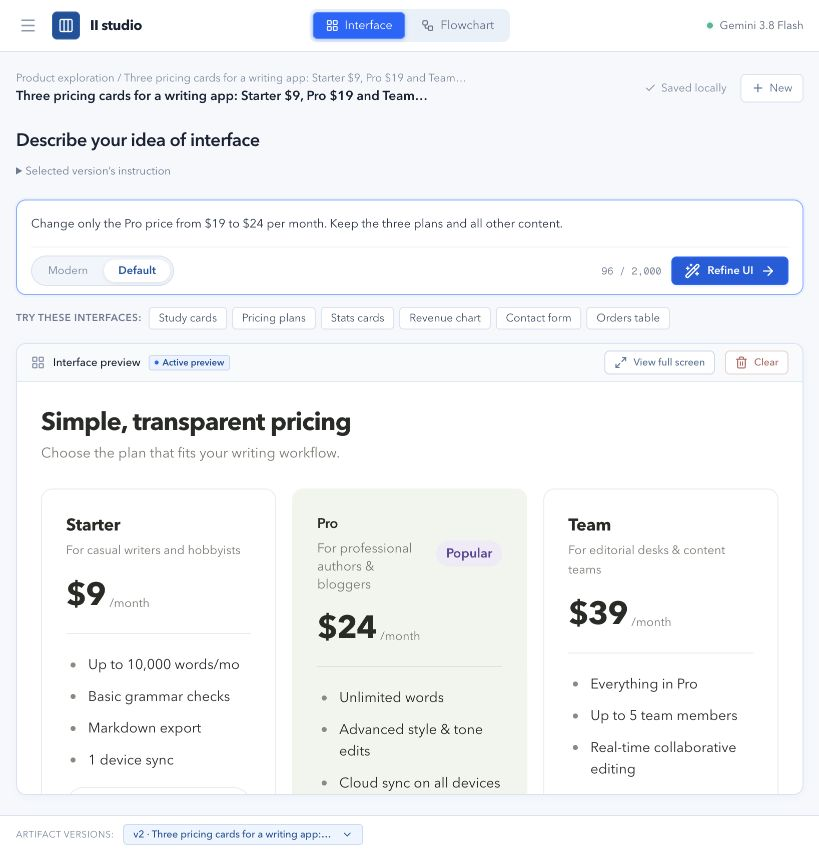
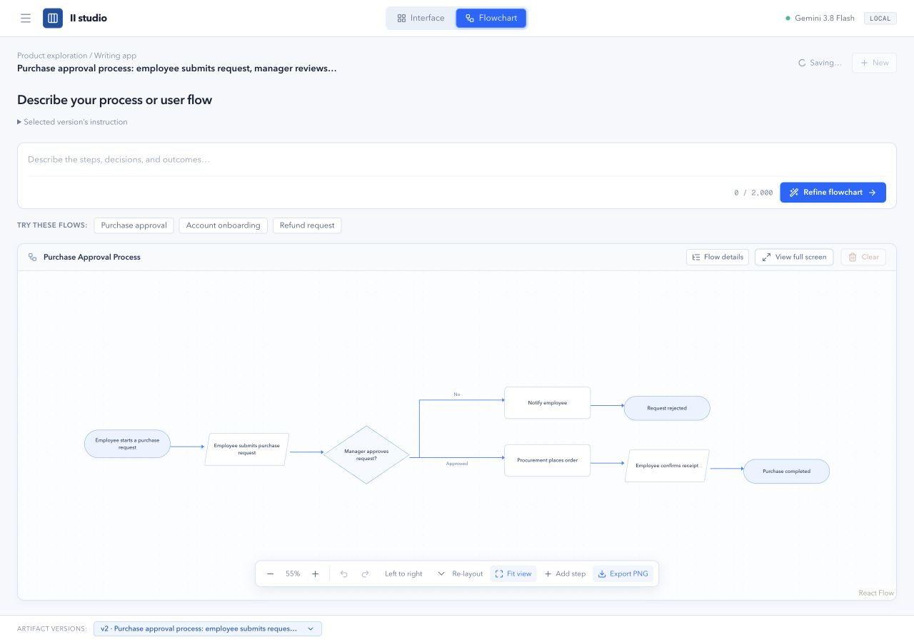

Local-first · Open-source release candidate
From requirements to interfaces and workflows.
Describe an idea. Generate an interactive interface or editable flowchart. Refine it, keep its history locally and share the result.
Official repository publication is pending approval. No hosted generation demo is included.Explore an interface
Use Default or Modern components, refine the whole screen or a selected section, and export a PNG.

Authentic earlier verification capture; controls have evolved since this image.Make a process editable
Generate structured flows, move steps, reconnect branches and refine the business logic.

Authentic earlier verification capture. Figma handoff is experimental and separate.Your connection. Your local workspace.
Run on an Apple Silicon Mac with Node.js 24+ and an installed, authenticated CLI. Provider availability, model quality and usage limits vary. Read the compatibility notes before setup.
npm run setup
npm run dev
Provider compatibility